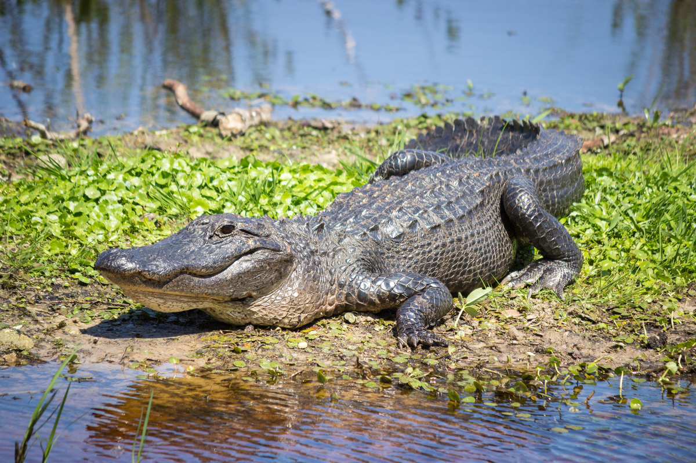
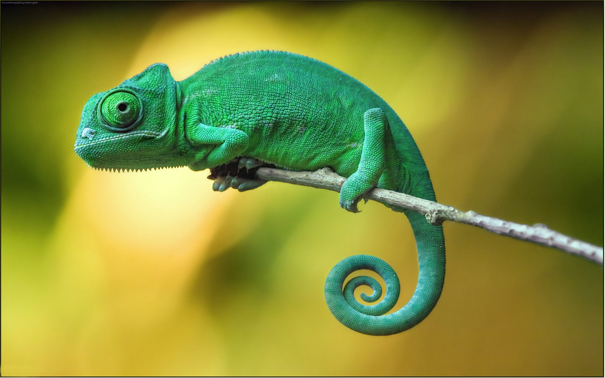
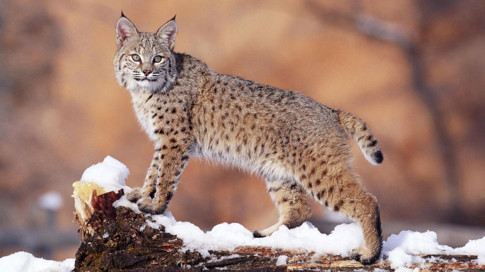

Вот ещё одно животное из представителей земноводных - Аллигатор
От других представителей отряда крокодилов аллигаторы отличаются более широкой мордой; глаза у них расположены более дорсально (в верхней части головы). Окраска обоих известных видов тёмная (часто почти чёрная), но зависит от цвета окружающей воды. Так, при наличии водорослей она может быть более зелёной, при высоком содержании в воде дубильной кислоты от нависающих деревьев окраска становится более тёмной.
Хамелеон - это Следующее наше животное

Длина тела без хвоста хамелеонов лежит в пределах от 13,5 мм у самцов и 19,2 мм у самок Brookesia nana (длина тела с хвостом 21,6 и 28,9 мм соответственно)[5] до 29,5 см у Calumma parsonii[6]. Большинство видов в длину достигают 30 см, а самые крупные представители вырастают до 50—60 см[источник не указан 37 дней].
Следующее животное это рысь
Длина тела рыси составляет 80—130 см и 50-70 см в холке, значительно крупнее и коренастее лисицы. Обычно рысь размером с крупную собаку. Масса взрослых самцов от 18 до 25 кг, очень редко может достигать и 35 кг; самки весят в среднем 20 кг. Туловище, как у всех рысей, короткое и плотное. На ушах длинные кисточки.
Назад